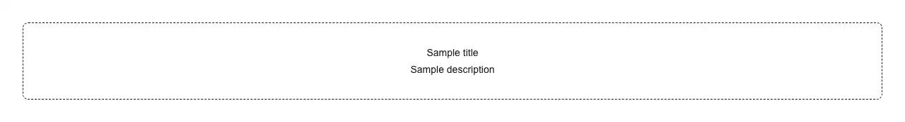

The centred placeholder a screen shows when it has nothing to draw — a dashed panel with an optional icon, a heading, one line of explanation, and room for a call to action. Use it for an empty table, list, inbox, or feed, a search or filter that matched nothing, a workspace, project or team before its first item exists, a first-run or onboarding screen, a dashboard card with no data yet, an empty cart, folder, or notification tray. Common asks it answers: "empty state", "no results found", "zero state", "blank slate", "no data placeholder", "nothing here yet", "empty list or table component", "empty search results", "first run experience", "no items yet with a create button". shadcn/ui now ships an `empty` of its own, so choose deliberately rather than by accident: theirs is a six-part compound API (Empty, EmptyHeader, EmptyMedia, EmptyTitle, EmptyDescription, EmptyContent) that composes into any arrangement and pulls in class-variance-authority; this is the one-import version — title plus optional icon, description and action, four props in total and no dependencies at all — for the much more common case where every empty state in the app looks alike and assembling six elements at each call site is just ceremony. Two accessibility details differ as well, and they are the two most often got wrong: here the title renders as a real h3, so it joins the heading outline and screen-reader users can reach it with heading navigation, whereas the official EmptyTitle is a styled div that heading navigation cannot see; and the icon wrapper is marked aria-hidden, because it is decoration, and announcing "inbox" or "circle-slash" before the sentence that actually explains the situation is noise. The description is capped at max-w-sm so the line keeps a readable measure inside a wide table. It has no hooks and no event handlers, so it carries no "use client" and renders inside a React Server Component without pulling a client boundary in behind it; you pass your own icon element, so it adds no icon library. Styled with shadcn tokens (border, muted-foreground) for light and dark themes. Distinct from skeleton and spinner, which say the rows are still loading: this one says the rows are not coming until the user does something.

Rendered on the shadcn default neutral palette with harness-generated props.
pnpm dlx shadcn@4.21.0 add @pulld/empty-state
| licence | POINTER |
|---|---|
| primitive base | none |
| type | registry:ui |
| files | src/components/ui/empty-state.tsx |
| npm deps pulled | none beyond the pre-installed peer set |
| registry deps | — |
| semantic / palette / hex | 2 / 0 / 0 |
| writes shared ui/ | yes — can overwrite the project’s own primitives |